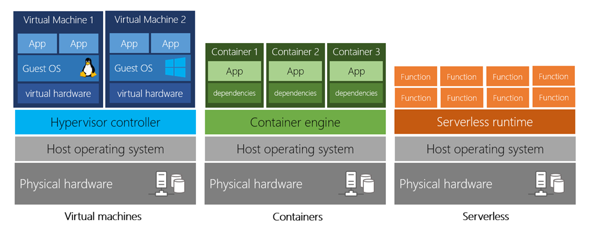
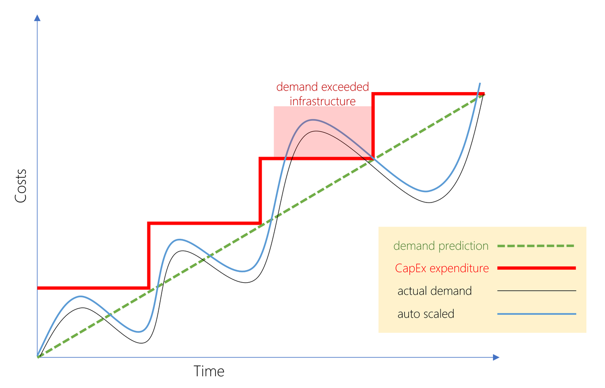
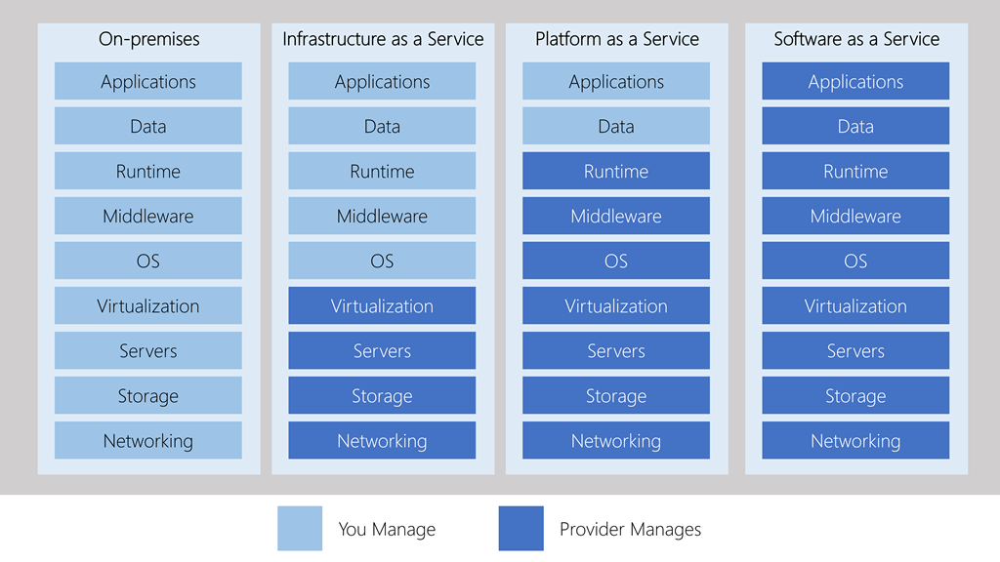

A Gentle Introduction to Cloud Computing
Computing mindset for the 2010s
Cloud computing took off in the decade of 2010s. Up until then, when people wanted to run an application, they had to buy computers, databases, switches, network, domains, software, hire IT staff to deploy and maintain anything on the internet. This is similar to learning everything about electricity before you can learn to turn on and off the power switch. Cloud computing changed all of this and allowed developers to build things on the internet without having to worry about hardware and networking.
What is cloud computing?¶
Cloud computing is renting of resources like storage, CPU, GPU from a server farm. You only pay for what you use - time or storage.
3 compute patterns¶
We can group compute patterns on the cloud to 3 categories:
- Virtual Machines - where you rent VMs of certain guest OS and manage all the software, OS updates, driver updates etc on it.
- Containers - similar to VMs, but lack a separate guest OS. All the app logic and data is bundled into an image that is run directly on the host OS
- Serverless - this is just code, not even images. You write your app to constitute a bunch of functions which are called on demand.

Unlike VMs and containers, when using serverless, you only pay for function execution time. In VMs and containers, you pay for run time of container and VM, even if they are idle.
Characteristics of cloud compute¶
Cloud computing is cost effective as there is no up-front infrastructure cost, no fixed rent, no separate electricity or utility bills for your servers.
It is scalable on demand. You can vertically scale by switching to a host machine with more RAM and CPUs or horizontally scale by distributing load to many servers and scaling out.
Scaling can be automatic or manual and can be based off a threshold such as CPU load or traffic per second. Thus, the cloud provider can add more resources during peak times and remove unused resources during down time. This nature of scalling is called being elastic.
Cloud gives the promise of being current - with respect to security patches, OS updates, hardware improvements etc and reliable - as redundancy is built-in by replicating / backing up periodically. This makes it fault tolerant and recoverable from disasters.
All of these happen automatically, in the background, without any interruption to your apps or to the users consuming your apps. Further, cloud makes your app go global as it can replicate content across multiple data centers, allowing for minimal network lag when accessed from across the globe.
On top of all this, cloud is secure as they have some of the best firewalls, anti viruses and dedicated team working to thwart attacks. They are also physically secure as they are remote in secure facilities.
Cost savings with cloud compute¶
Capital expenditures, such as server costs, storage costs, network costs, backup and DR costs, utility costs are called as CapEx costs. These are typically encountered in the traditional datacenter model and mostly are up-front, but can become recurring as demand changes and technologies shift over time.
Operational costs such as building custom features, scaling costs, licensing costs etc are called as OpEx costs.
The graphic below illustrates how demand and costs change over time. By moving to the cloud, companies can limit both these costs, while maintaining superior experience for the end users.

Cloud deployment patterns¶
-
Public cloud: most common, most simple, everything including hardware, storage, execution is managed by provider. Hardware is typically shared across multiple cloud customers (
multitenant). Primary advantage is cost. -
Private cloud: next common - could be in your premises or actually on the cloud itself (as in
VPC). You become the maintainer of the cloud and provision to internal customers. Advantages include highest data ownership, compliance with certain government regulations etc. - Hybrid cloud: is a mix of both. Typically, the public cloud contains as much public elements as possible and the private contains the most secure and sensitive information / systems.
3 types of cloud services¶
- IaaS: Infrastructure as a Service: you have complete control over the software stack installed on the servers. The machines / hardware is still managed by the cloud provider, but you manage the host OS, updates, load balancing etc. Think of IaaS as renting hardware. If you want a machine that is dedicated to you, but not necessarily on your premises, then this is the best. The cost is typically pay-as-you-go.
- PaaS: Platform as a Service: is somewhere in the middle, it provides the entire cloud provider platform to manage the full life-cycle of the product you build, from development to test to deployment.
- SaaS: Software as a Service: is typically what you build and sell. However, you can subscribe services from the cloud provider as well - for instance AI services such as vision and audio transcribing, email services, storage services etc.
As you thought, each type sits on top of the pervious level, thereby abstracting some level of complexity. The graphic below explains this better.

Popular cloud providers¶
As of this blog, there are a number of cloud providers out there - Azure, AWS, Rackspace, Linode, Heroku, GCC etc. However, AWS from Amazon and Azure from Microsoft are industry leaders and many other cloud providers actually build on top of these providers. To know more about these, checkout my other blogs on this topic.